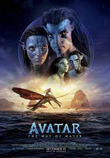

MOVIE GALLERY

AVATAR
PLOT: A paraplegic Marine dispatched to the moon Pandora on a unique mission becomes torn between following his orders and protecting the world he feels is his home.When his brother is killed in a robbery,paraplegic Matine Jake Sully decides to take his place in a mission on the distant world of Pandora.
Release Date:18 December 2009
Director:James Cameron
Sam Worthington,Zoe Saldana
Language:English
IMDb:7.8/10

THE GODFATHER
PLOT:The movie focuses on the powerful italian-American crime family of Don Vito Corleone (Marion Brando ).When the don's youngest son, Michael (Al Pacino ),relactantly jouns the Mafia,he becomes involved tn the invitable cycle of violence and betraya;l.Later he is drawbn deeper onto the family business.
Release Date:24 March 1972
Director:Francis Ford Coppola
Marlon Brando,AI Pacino
Language:English,Italin,Latin
IMDb:9.2/10

INCEPTION
PLOT:A thief who steals corporate secrets through the use of dream-sharing technology is given the inverse task of planting an idea into the mind of a C.E.O., but his tragic past may doom the project and his team to disaster.
Release Date:16 July 2010
Director:Cristopher Nolan
Cast:Leonardo DiCaprio,Ken Watanabe,Tom Hardy,Joseph Gordon-Levitt,Joseph Gordon-Levitt
Language:English,French,Japanese
IMDb:8.8/10

SCARFACE
PLOT:Scarface is a 1983 American crime drama film directed by Brian De Palma and written by Olivet Stone.it tells the story of Cuban refugee Tony Montana (Al Pacino ),who arrives penniless in Miami duting the Mariel boatlift and becomes a powerful .
Release Date:December 1,1983
Director:Brian De Palma
Cast:Michelle Pfeiffer,Steven Bauer,Al Pacino
Language:English,Spanish
IMDb:8.3/10

SUPERMAN
Man of Steel is a 2013 superhero film based on the DC Comics character Superman. Directed by Zack Snyder from a screenplay by David S. Goyer (who conceived the screen story with co-producer Christopher Nolan), it is the first installment in the DC Extended Universe.
Release Date:June 14,2013
Director:Zack Snyder
Cast:Henry Cavill,Amy Adams ,Michael Shannon
Language:English
IMDb:7.1/10